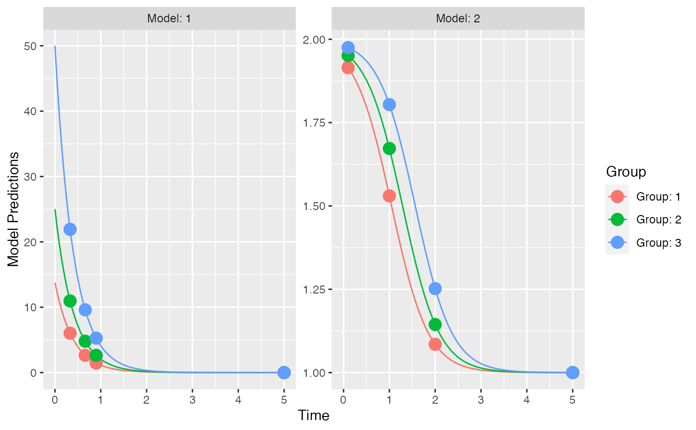

R/models.R
ff.PKPD.1.comp.sd.CL.emax.RdThis is a structural model function that encodes the model described above.
The function is suitable for input to the create.poped.database function using the
ff_file argument.
ff.PKPD.1.comp.sd.CL.emax(model_switch, xt, parameters, poped.db)
| model_switch | a vector of values, the same size as |
|---|---|
| xt | a vector of independent variable values (often time). |
| parameters | A named list of parameter values. |
| poped.db | a poped database. This can be used to extract information that may be needed in the model file. |
A list consisting of:
y the values of the model at the specified points.
poped.db A (potentially modified) poped database.
Other models:
feps.add.prop(),
feps.add(),
feps.prop(),
ff.PK.1.comp.oral.md.CL(),
ff.PK.1.comp.oral.md.KE(),
ff.PK.1.comp.oral.sd.CL(),
ff.PK.1.comp.oral.sd.KE(),
ff.PKPD.1.comp.oral.md.CL.imax()
Other structural_models:
ff.PK.1.comp.oral.md.CL(),
ff.PK.1.comp.oral.md.KE(),
ff.PK.1.comp.oral.sd.CL(),
ff.PK.1.comp.oral.sd.KE(),
ff.PKPD.1.comp.oral.md.CL.imax()
library(PopED) ## find the parameters that are needed to define from the structural model ff.PKPD.1.comp.sd.CL.emax#> function (model_switch, xt, parameters, poped.db) #> { #> with(as.list(parameters), { #> y = xt #> MS <- model_switch #> CONC = DOSE/V * exp(-CL/V * xt) #> EFF = E0 + CONC * EMAX/(EC50 + CONC) #> y[MS == 1] = CONC[MS == 1] #> y[MS == 2] = EFF[MS == 2] #> return(list(y = y, poped.db = poped.db)) #> }) #> } #> <bytecode: 0x7f853baa4ed8> #> <environment: namespace:PopED>## -- parameter definition function ## -- names match parameters in function ff sfg <- function(x,a,bpop,b,bocc){ ## -- parameter definition function parameters=c( CL=bpop[1]*exp(b[1]) , V=bpop[2]*exp(b[2]) , E0=bpop[3]*exp(b[3]) , EMAX=bpop[4]*exp(b[4]) , EC50=bpop[5]*exp(b[5]) , DOSE=a[1] ) return( parameters ) } feps <- function(model_switch,xt,parameters,epsi,poped.db){ ## -- Residual Error function ## -- Proportional PK + additive PD returnArgs <- do.call(poped.db$model$ff_pointer,list(model_switch,xt,parameters,poped.db)) y <- returnArgs[[1]] poped.db <- returnArgs[[2]] MS <- model_switch prop.err <- y*(1+epsi[,1]) add.err <- y+epsi[,2] y[MS==1] = prop.err[MS==1] y[MS==2] = add.err[MS==2] return(list( y= y,poped.db =poped.db )) } ## -- Define initial design and design space poped.db <- create.poped.database(ff_fun=ff.PKPD.1.comp.sd.CL.emax, fError_fun=feps, fg_fun=sfg, groupsize=20, m=3, sigma=diag(c(0.15,0.15)), bpop=c(CL=0.5,V=0.2,E0=1,EMAX=1,EC50=1), d=c(CL=0.01,V=0.01,E0=0.01,EMAX=0.01,EC50=0.01), xt=c( 0.33,0.66,0.9,5,0.1,1,2,5), model_switch=c( 1,1,1,1,2,2,2,2), minxt=0, maxxt=5, a=rbind(2.75,5,10), bUseGrouped_xt=1, maxa=10, mina=0.1) ## create plot of model without variability plot_model_prediction(poped.db,facet_scales="free")#> [,1] [,2] [,3] [,4] [,5] [,6] #> [1,] 13423.83149 -26148.43438 -104.9746 -55.87794 20.58619 0.000000e+00 #> [2,] -26148.43438 70314.08833 -137.2793 -103.59890 26.32348 0.000000e+00 #> [3,] -104.97460 -137.27932 1209.7986 516.06655 -116.00915 0.000000e+00 #> [4,] -55.87794 -103.59890 516.0666 449.35861 -62.47406 0.000000e+00 #> [5,] 20.58619 26.32348 -116.0092 -62.47406 22.73598 0.000000e+00 #> [6,] 0.00000 0.00000 0.0000 0.00000 0.00000 9.385378e+04 #> [7,] 0.00000 0.00000 0.0000 0.00000 0.00000 5.697839e+04 #> [8,] 0.00000 0.00000 0.0000 0.00000 0.00000 2.298710e+01 #> [9,] 0.00000 0.00000 0.0000 0.00000 0.00000 6.524561e+00 #> [10,] 0.00000 0.00000 0.0000 0.00000 0.00000 8.880407e-01 #> [11,] 0.00000 0.00000 0.0000 0.00000 0.00000 1.115568e+03 #> [12,] 0.00000 0.00000 0.0000 0.00000 0.00000 1.345372e+01 #> [,7] [,8] [,9] [,10] [,11] #> [1,] 0.000000e+00 0.000000 0.0000000 0.0000000 0.0000000 #> [2,] 0.000000e+00 0.000000 0.0000000 0.0000000 0.0000000 #> [3,] 0.000000e+00 0.000000 0.0000000 0.0000000 0.0000000 #> [4,] 0.000000e+00 0.000000 0.0000000 0.0000000 0.0000000 #> [5,] 0.000000e+00 0.000000 0.0000000 0.0000000 0.0000000 #> [6,] 5.697839e+04 22.987097 6.5245606 0.8880407 1115.5680152 #> [7,] 6.592095e+04 6.586597 3.6779636 0.2558559 1176.6041001 #> [8,] 6.586597e+00 12197.738218 2243.7358555 112.3394149 4.8902658 #> [9,] 3.677964e+00 2243.735855 1714.4795989 32.6395909 0.5891989 #> [10,] 2.558559e-01 112.339415 32.6395909 4.3373414 0.1964359 #> [11,] 1.176604e+03 4.890266 0.5891989 0.1964359 3811.1481605 #> [12,] 4.616968e+00 3055.546022 1230.5356715 65.5594938 3.8335502 #> [,12] #> [1,] 0.000000 #> [2,] 0.000000 #> [3,] 0.000000 #> [4,] 0.000000 #> [5,] 0.000000 #> [6,] 13.453723 #> [7,] 4.616968 #> [8,] 3055.546022 #> [9,] 1230.535671 #> [10,] 65.559494 #> [11,] 3.833550 #> [12,] 4658.810828#> [1] 1.421054e+39#> CL V E0 EMAX EC50 d_CL #> 3.306524 3.610227 4.575451 6.825531 30.397923 47.350220 #> d_V d_E0 d_EMAX d_EC50 SIGMA[1,1] SIGMA[2,2] #> 56.556024 113.036005 291.542904 5854.936456 10.829134 11.705173